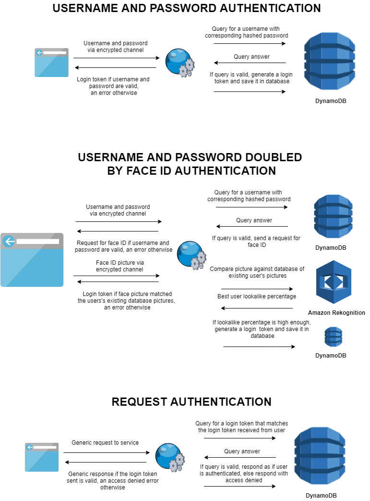
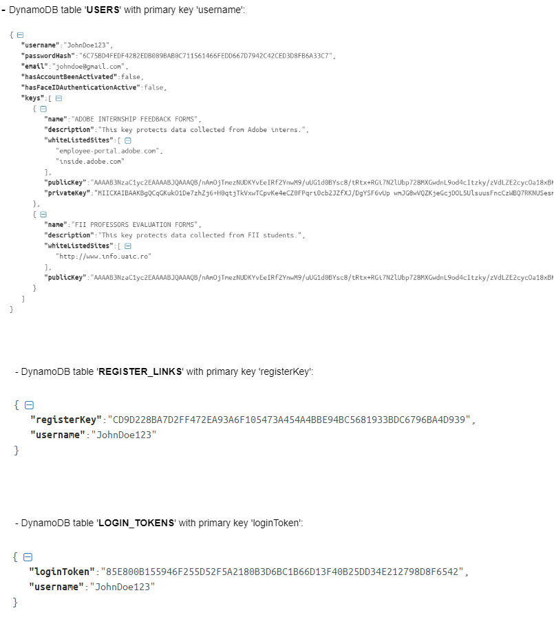
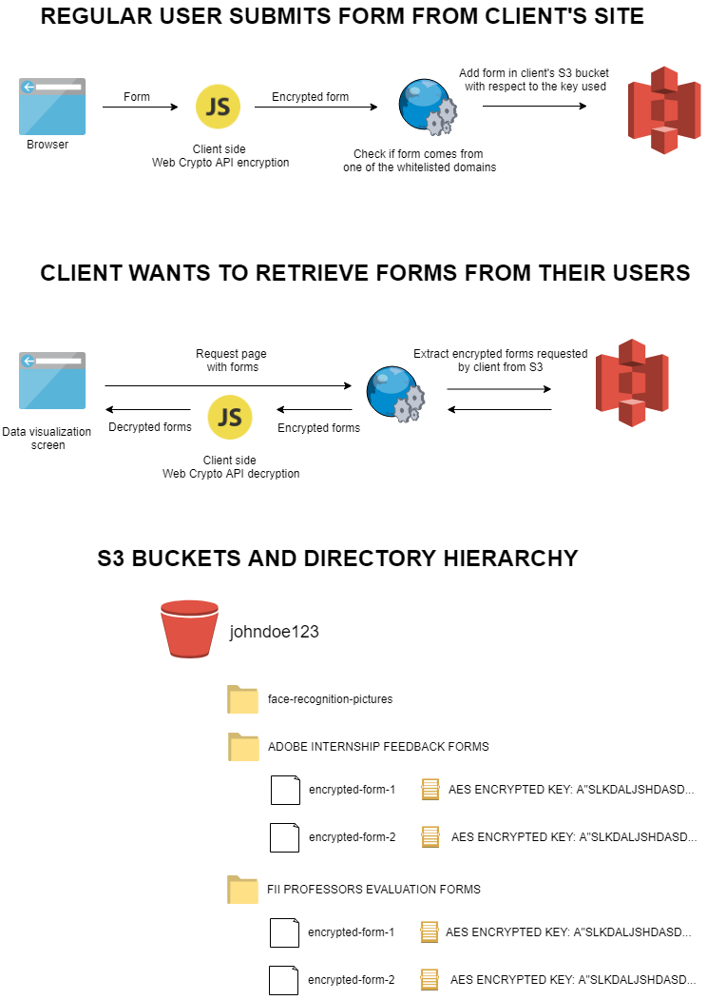
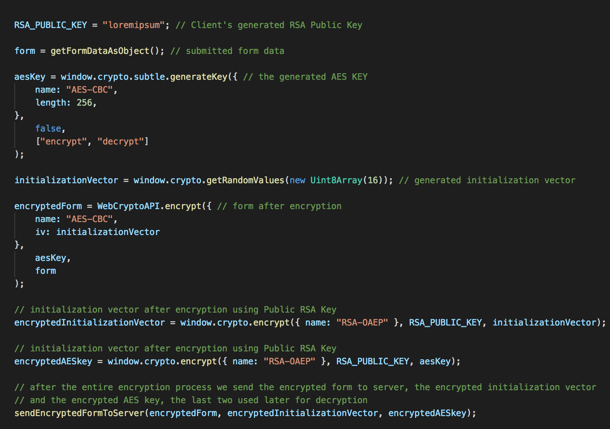
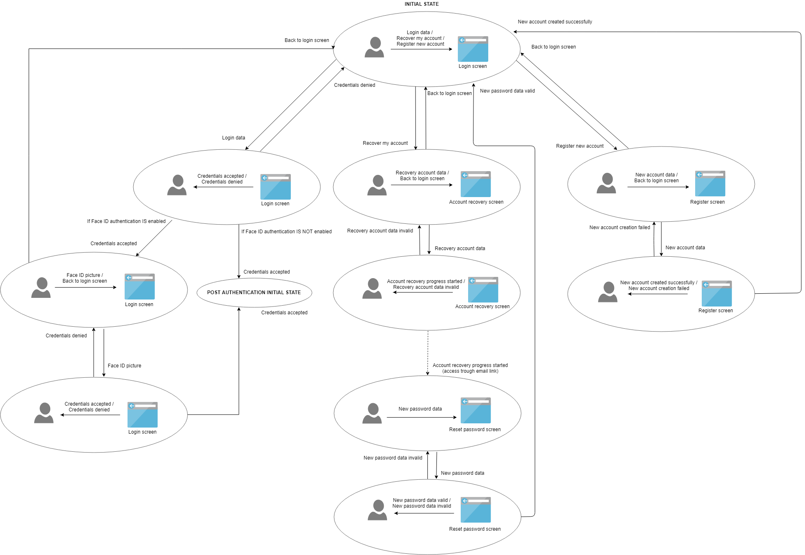
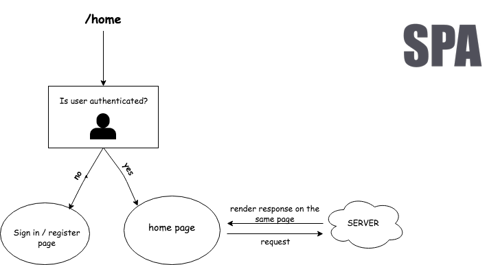
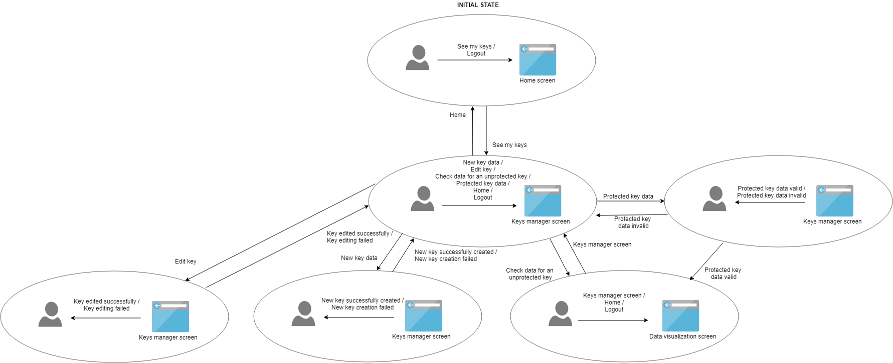

DAVE is a web application developed by students. The purpose of this project is to improve the security
of data transferred and stored in on-line environment.
This report will present the details behind the development of this project and its progress.
2. Introduction
Nowadays every web-site process its user's data, no matter if it's about transfering or storing it and
inevitable the security of this data is one of the current issues that people are dealing with.
DAVE is projected for every website owner who wants his users data to be stored in a secured way.
Also, he will be able to visualize this data both in a raw format and also in a processed one
(displaying different relevant statistics).
3. Summary
We want to design and develop a web platform and a web service to improve the data transfer security.
The application is related to all data submitted through forms, at a general level, and to all
owners of websites where forms are involved. We want to help them by storing their data in an encrypted
way (the data will be encrypted from the moment of form submisson and decrypted only when the
client wants to acces it).
So the platform will offer the possibility to manage the keys, the white-listed sites, to visualize
data from the submitted forms and to get relevant statistics about these forms.
4. Intermediate stages
Established what external services the platform requires (S3, DynamoDB, Amazon Rekognition, Web
Criptography API), etc.
Implementation of login functionality through a traditional way but also using a second
authentication method in order to improve security: facial recognition.
Implementation of the keys management logic.
Implementation of data visualization tab.
The generated JS code that will be imported in client's websites.
5. Data
The registration and login system will be by default in a traditional manner, and if the user wants, it
will be possible
to add to each sign in a second security check using face-recognition (Amazon Rekognition).

Clients data (keys, profile etc) will be stored on DynamoDB while the data collected from forms will be
stored in S3.


Before storing forms data in S3, we will use Web Criptography API to encrypt it, as it follows:

6. Client-side workflow
On the client side we will retrieve data from server, we will decrypt it again using Web Criptography
API and then we will display it in different manners.
We will also use an external library (D3) in order to display relevant statistics about this data in
several bar-charts.



7. Technologies and services used
First and foremost, in order to deliver a modern web application, we used the three main components
that are present almost everywhere and these are:
So, while the Front-End part was an easy task in choosing the correct technologies, for the Back-End
and thus Database segment, there are many choices out there, each with a different purpose.
Considering this, we have taken the decision to use NodeJS server, backed up by a DynamoDB database,
while the encrypted data will be stored in S3.:
The reasoning for choosing these services for storing data are:
DynamoDB is a database service based on NoSQL, which is fast and flexible
The performance of the service will automatically scale with the growth of the application.
Unlike MySQL, where a table can degrade if it goes over 10GB.
Data is stored in flexible, JSON-like documents that can have varied structures
In DynamoDB, documents are able to have their own unique structure
New fields can be added at any time and contain any type of value.
This type of functionality would require a relational database to be restructured
DynamoDB is schema-free, allowing you to create documents without having to define the
structure of the document first
Easy to integrate and it does not require a DBA (Database Administrator)
8. Conclusion
In conclusion, we hope to be able to deliver a top-notch product that will improve the idea of security
of data on the internet.
We thank you for reading this Scholarly Article and we'll see you soon!